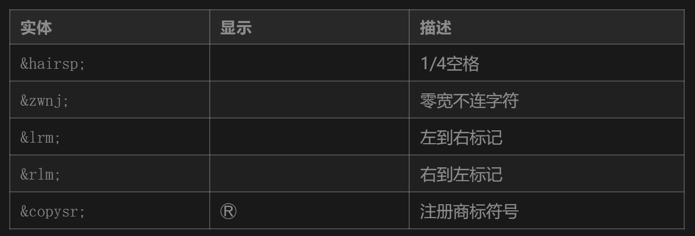

前言
HTML 作为 Web 开发的基石，看似简单却隐藏着许多容易被忽视的细节。本文将深入探讨一些鲜为人知的 HTML 特性、语义化技巧和实用代码示例，帮助开发者提升代码质量和开发效率。
1. 原生懒加载的威力
loading="lazy"属性自 HTML5 开始支持，可显著优化页面加载性能：
<img src="large-image.jpg" loading="lazy" alt="示例图片" />
<iframe src="content.html" loading="lazy"></iframe>
实现原理：
- 延迟加载视口外的资源
- 支持
auto（默认）|eager（立即加载）|lazy - 兼容性：现代浏览器（Chrome 77+）
注意事项：
- 首屏图片不建议使用
- 需设置明确的 width/height 避免布局偏移
- 与 IntersectionObserver API 配合更佳
2. 隐藏的折叠组件：<details> & <summary>
无需 JavaScript 即可创建原生折叠效果：
<details>
<summary>查看详细信息</summary>
<p>这里是被隐藏的内容...</p>
<ul>
<li>支持嵌套其他HTML元素</li>
<li>默认关闭状态</li>
</ul>
</details>
进阶技巧：
details[open] summary {
color: #f00;
}
浏览器支持：
- 除 IE 外的现代浏览器
- 可通过 polyfill 实现兼容
3. 原生的对话框：<dialog>
替代传统模态框的新选择：
<dialog id="myDialog">
<h2>系统提示</h2>
<p>确认执行此操作？</p>
<button onclick="dialog.close()">取消</button>
<button onclick="dialog.close()">确认</button>
</dialog>
<script>
const dialog = document.getElementById("myDialog");
// 打开对话框
dialog.showModal();
// 普通显示
dialog.show();
</script>
4. Meta 标签的隐藏功能
主题颜色控制
<meta name="theme-color" content="#2196f3" />
iOS 全屏模式
<meta name="apple-mobile-web-app-capable" content="yes" />
缓存控制
<meta
http-equiv="Cache-Control"
content="no-cache, no-store, must-revalidate"
/>
<meta http-equiv="Pragma" content="no-cache" />
<meta http-equiv="Expires" content="0" />
5. 被低估的输入类型
HTML5 新增的输入类型常被忽视：
<!-- 颜色选择器 -->
<input type="color" value="#ff0000" />
<!-- 日期选择 -->
<input type="date" min="2023-01-01" max="2024-12-31" />
<!-- 范围滑块 -->
<input type="range" list="tickmarks" />
<datalist id="tickmarks">
<option value="0" label="0%"></option>
<option value="50"></option>
<option value="100" label="100%"></option>
</datalist>
验证技巧：
// 自定义验证消息
input.oninvalid = function (e) {
e.target.setCustomValidity("请填写有效日期");
};
6. 自定义数据属性的妙用
data-*属性的高级应用：
<div data-user-info='{"id":123, "name":"John"}'></div>
CSS 联动：
[data-status="error"] {
border-color: red;
}
JavaScript 操作：
const userData = JSON.parse(element.dataset.userInfo);
element.dataset.loading = "true";
7. 图片的进阶处理
srcset 与 sizes 优化
<img
src="small.jpg"
srcset="medium.jpg 1000w, large.jpg 2000w"
sizes="(max-width: 600px) 100vw, 50vw"
alt="响应式图片"
/>
decoding 异步解码
<img src="huge-image.jpg" decoding="async" alt="大图" />
8. 模板引擎：<template>标签
原生 HTML 模板解决方案：
<template id="cardTemplate">
<div class="card">
<h3 class="title"></h3>
<p class="content"></p>
</div>
</template>
<script>
const template = document.getElementById("cardTemplate");
const clone = template.content.cloneNode(true);
clone.querySelector(".title").textContent = "新卡片";
document.body.appendChild(clone);
</script>
优势：
- 不立即渲染
- 可重复利用
- 保持 DOM 结构完整性
9. 可访问性隐藏技巧
正确的隐藏方式对比：
/* 视觉隐藏但可被屏幕阅读器识别 */
.sr-only {
position: absolute;
width: 1px;
height: 1px;
padding: 0;
margin: -1px;
overflow: hidden;
clip: rect(0, 0, 0, 0);
white-space: nowrap;
border: 0;
}
错误做法：
.hidden {
display: none; /* 完全隐藏 */
visibility: hidden; /* 保留布局空间 */
}
10. 不常见的 HTML 实体
进阶技巧合集
1. 内容安全策略（CSP）
<meta
http-equiv="Content-Security-Policy"
content="default-src 'self'; script-src 'unsafe-inline'"
/>
2. 预加载关键资源
<link rel="preload" href="font.woff2" as="font" type="font/woff2" crossorigin />
3. 性能优化属性
<script defer src="app.js"></script>
<link rel="modulepreload" href="module.js" />
4. 地理定位集成
<button onclick="navigator.geolocation.getCurrentPosition(showPosition)">
获取位置
</button>
5. 原生进度条
<progress value="75" max="100"></progress>